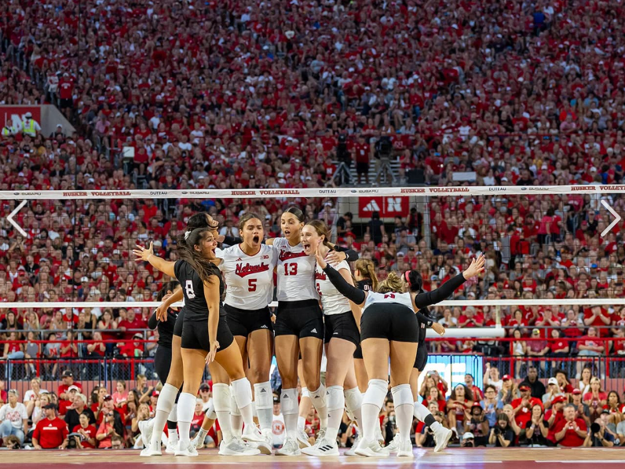
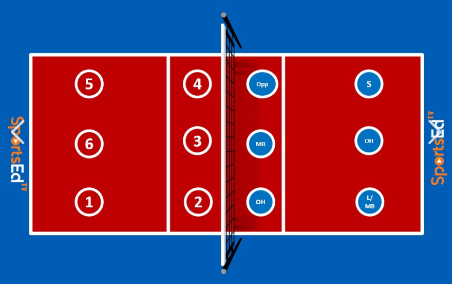
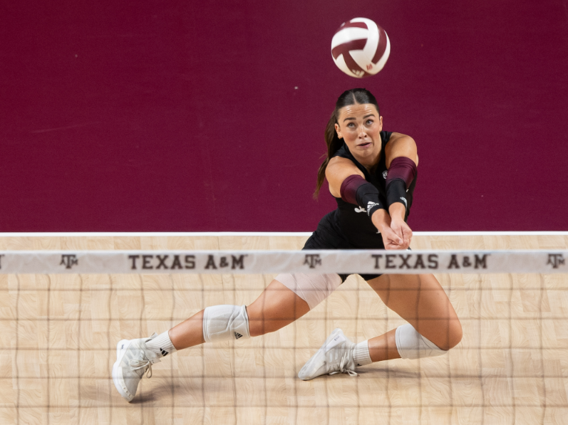
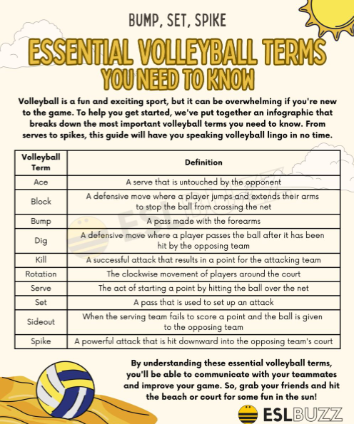
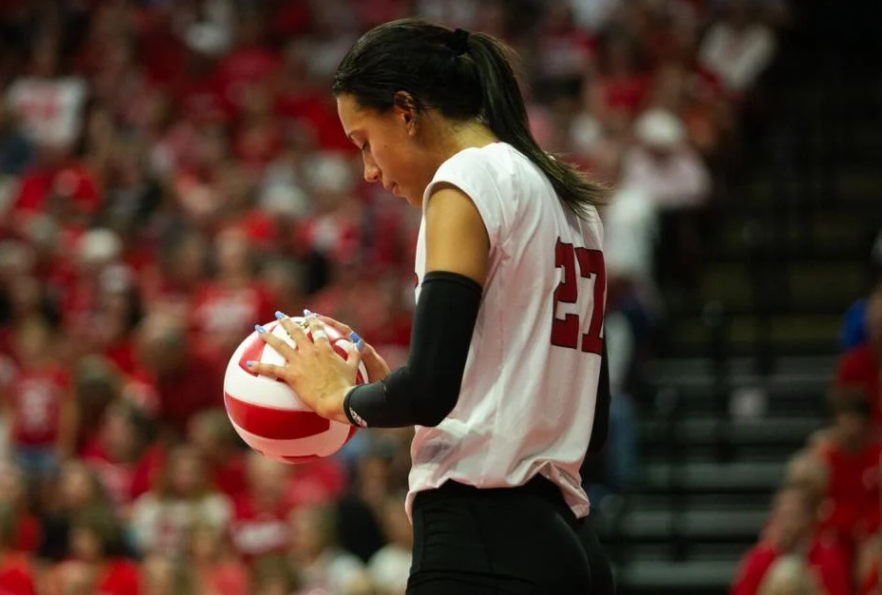
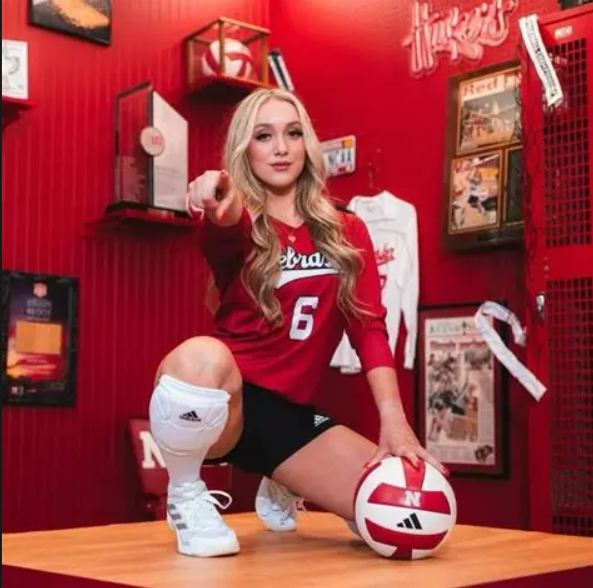
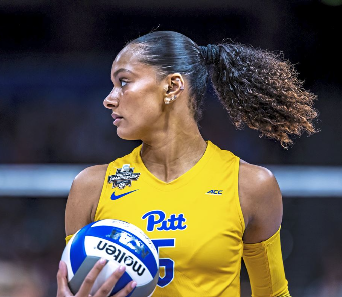
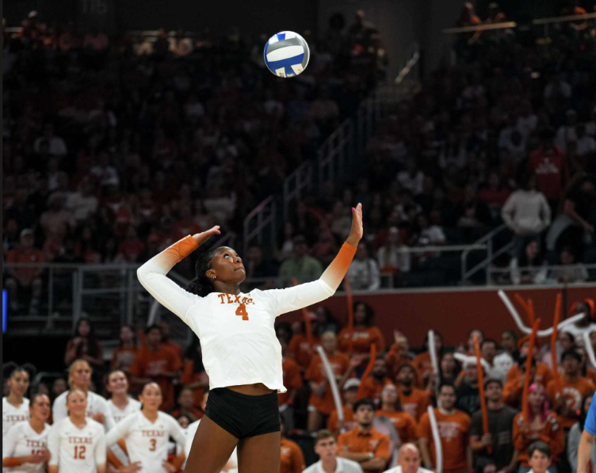
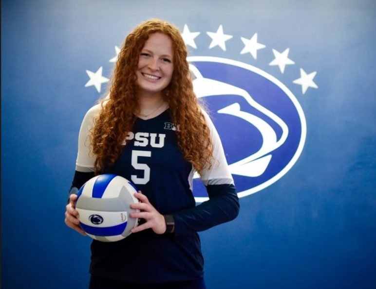
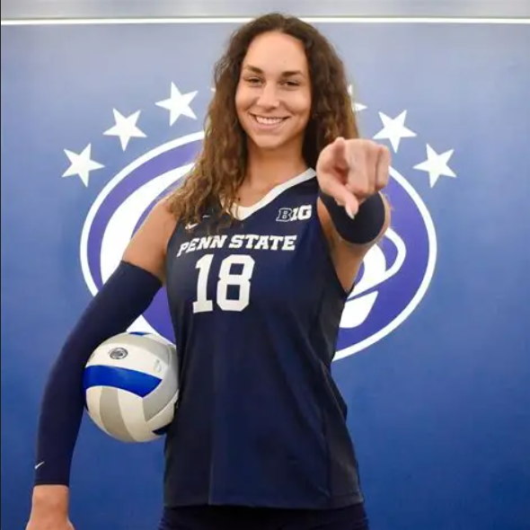

This is a picture of University of Nebraska's volleyball team, they were ranked as the number 1 seed last year.

This is a picture of the courts layout and the positions.
The Setter's job is to help the hitters spike the ball at the other team. The Outside Hitter is the primary attacker. The Middle Blocker also attacks balls when set but they mainly block. The Opposite Hitter is mainly the team's best attacker and server. The Defensive Specialist receives serves, digs hard attacks from the opposing team and passing the ball to the setter. The Libero basically has the same job as a DS but they wear a different color jersey, can't serve or rotate to the front line.

This is an image of Texas A&M's Libero.
Usually in volleyball, the sets are best out of 5. The first 4 sets go up to 25 points and if they 5th set is reached, its normally up to 15 points. If the points are tied by the end of the rally, your team has to win by a 2 point lead. Each team only gets 3 touches in one play, if there is more than 3 touches, its considered a "dead ball" and the opposing team gets the point. If the ball goes out of the court on your side with no touch, its a point for your team. But if the ball goes out on the other teams side and you hit it last, its their point.

Here are some volleyball terms you should know.






These are my favorite players.
Harper Murray(OH), Laney Choboy(L, DS), Olivia Babcock(OPP), Torrey Stafford(OH), Alexis Stucky(S), and Kennedy Martin(OPP, OH).